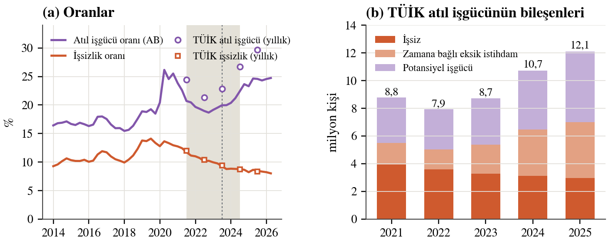
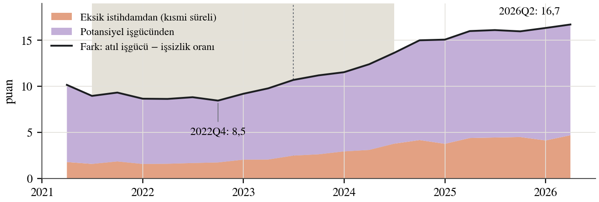
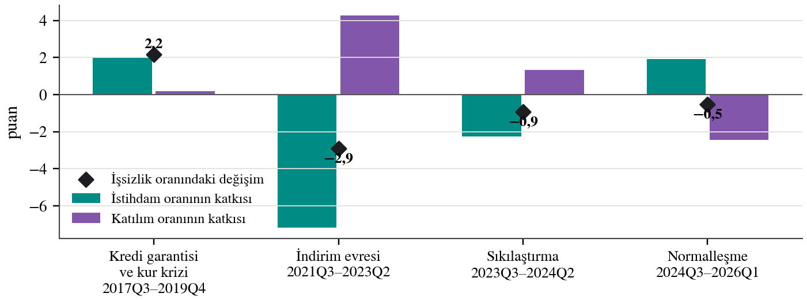
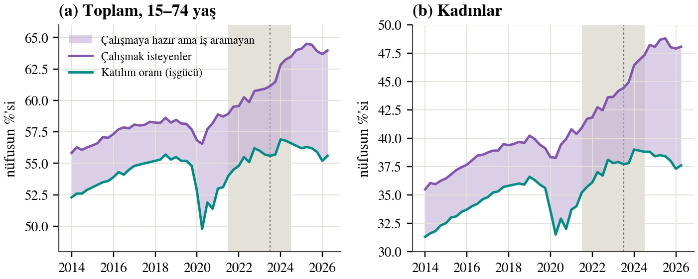
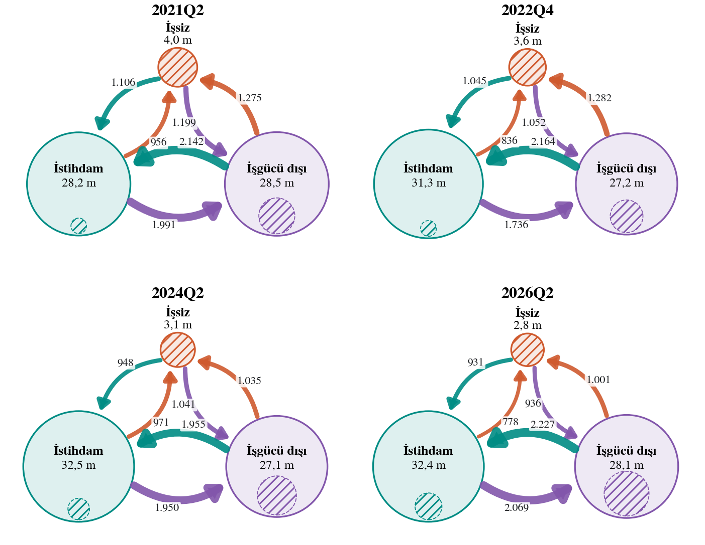
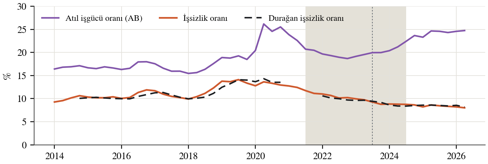
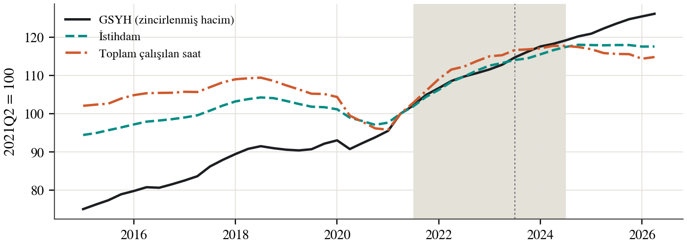
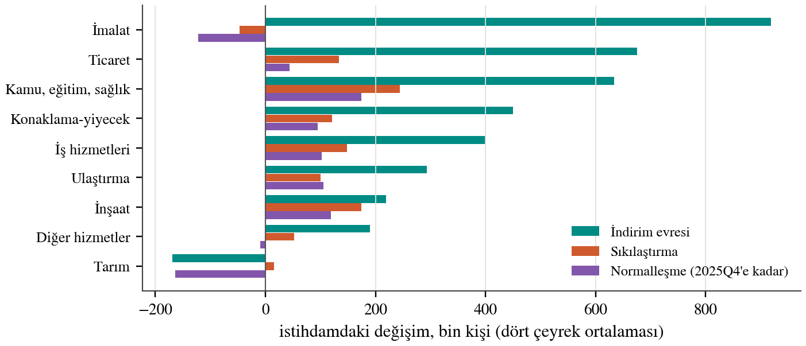

Kaynak: Eurostat lfsi_long_q. Her hücre bir çeyrek; turuncu ortalamanın üstünü, mavi altını gösteriyor. Çerçeve NRIR dönemi, kesikli çizgi politika dönüşü; taralı sütun 2021Q1 (veri yok).
Negatif reel faiz döneminde ve sonrasında emek piyasasına akımlar üzerinden bir bakış
Türkiye'de işsizlik oranı 2021'den bu yana kesintisiz düştü; TÜİK'in atıl işgücü oranı ise 2022'den sonra yükseldi. İki oran arasındaki fark 2022'de 10,9 puandı, 2025'te 21,4 puana çıktı. Bu not farkın nereden geldiğini işgücü özdeşlikleri ve anketin panel kısmından hesaplanan işgücü akımlarıyla inceliyor. Negatif reel faizli indirim evresinde (2021Q3–2023Q2) büyüme istihdam yoğundu ve bütün atıl işgücü göstergeleri birlikte düştü. Fark 2022 sonunda en dar düzeyindeydi. Genişlemenin yarısı NRIR döneminin son altı çeyreğinde, yarısı yüksek reel faizli normalleşmede oldu. 2023'ten sonra işten ayrılanların artan bir kısmı işsizliğe değil işgücü dışına gitti, işgücü dışından iş aramaya başlayanlar azaldı. Kişi başı çalışma saati düştü, kısmi süreli iş arttı, çalışmak isteyip iş aramayanların sayısı 2,45 milyon arttı. Bu yıllarda işsizlik oranı emek piyasasının sıkılığını ölçmüyor.
Türkiye 2021Q3–2024Q2 arasında derin ve uzun bir negatif reel faiz dönemi yaşadı. Merkez bankası Eylül 2021'de enflasyon %19 civarındayken politika faizini indirmeye başladı ve indirimleri Şubat 2023'e kadar sürdürdü. Haziran 2023'te politika döndü ve reel faiz 2024'te yüksek bir pozitif düzeye çıktı. Bu not dönemi V2 taslağındaki evrelerle izliyor: indirim evresi (2021Q3–2023Q2), sıkılaştırma evresi (2023Q3–2024Q2), ikisinin toplamı olan NRIR dönemi ve normalleşme (2024Q3–2026Q1).
Bu yıllarda emek piyasasının manşet göstergesi olumlu bir hikâye anlattı: işsizlik oranı %12'den %8'in altına indi. Ama daha geniş ölçü olan atıl işgücü oranı 2022'den sonra yükseldi ve 2025'te %29,7'ye ulaştı. Notun sorusu bu ayrışmanın nereden geldiği. Cevabı üç araçla arıyorum: işgücü stoklarını ve oranlarını bağlayan özdeşlikler, anketin panel kısmından hesaplanan işgücü akımları (istihdam, işsizlik ve işgücü dışı arasındaki geçişler) ve çalışma saatleri.
Essay 3'ü yazmaya başlamadan önce konuyu negatif reel faiz döneminde büyüme ve istihdam olarak kurgulamıştım. Büyümeyi varlık fiyatı enflasyonuyla büyüme modeli ve secular stagnation literatürüyle açıklayabiliyordum; istihdam tarafı ise kafamda yerine oturmamıştı. Önce işgücüne katılma oranına baktım ama belirgin bir patern yakalayamadım. Sonra atıl işgücü ile işsizlik oranı arasındaki farkın açıldığını fark ettim. Bu not o farkın izini sürüyor.
Veri. TÜİK'in Hanehalkı İşgücü Anketi üç kaynaktan kullanıldı. Temel göstergeler (15 ve daha yukarı yaş, aylık, mevsimsellikten arındırılmış) TCMB EVDS'ten alındı. Atıl işgücünün bileşenleri, işgücü akımları, çalışma saatleri, sektör ve statü kırılımları için TÜİK'in aynı anketten Eurostat'a gönderdiği seriler kullanıldı (15–74 yaş, 2026Q2'ye kadar). TÜİK'in kendi yıllık atıl işgücü oranları 2021–2025 yıllık bültenlerinden alındı. 2021Q1'de anket yöntemi değişti; bu yüzden bütün karşılaştırmalar 2021Q2'den başlıyor ve akım serisinde 2021Q1 bulunmuyor.
Özdeşlikler. Nüfus (POP) üç duruma ayrılır: istihdam (E), işsiz (U) ve işgücü dışı (N). İşgücü LF = E + U'dur. İşsizlik oranı istihdam oranı (ER) ve katılım oranıyla (LFPR) şöyle bağlanır:
u = U / LF = 1 − ER / LFPR
Bu eşitlik işsizlikteki değişimi iki parçaya ayırır: istihdam oranının katkısı ve katılımın katkısı. İşsizlik iş yaratılınca da düşer, insanlar işgücünden çıkınca da.
Atıl işgücü ölçüsü (ILO 2013) işsizlere iki grup ekler. Zamana bağlı eksik istihdam (TRU): TÜİK tanımında referans haftasında fiilen 40 saatten az çalışan, daha fazla çalışmak isteyen ve buna hazır olanlar. Potansiyel işgücü (PLF): iş aramayan ama çalışmaya hazır olanlar ile iş arayan ama hemen başlayamayacak olanlar. TÜİK'in atıl işgücü oranı ile işsizlik oranı arasındaki fark yalnız bu iki gruba bağlıdır:
LU4 − u = TRU / ELF + (1 − u) · PLF / ELF, ELF = LF + PLF
Bir işsiz iş aramayı bırakıp çalışmaya hazır kalırsa işsizlik oranı düşer, atıl işgücü oranı değişmez. Bir çalışanın saati 40'ın altına iner ve daha çok çalışmak isterse işsizlik oranı değişmez, atıl işgücü oranı yükselir. Her iki durumda da fark büyür.
Akımlar ve durağan işsizlik. Her çeyrek altı geçiş olur: istihdamdan işsizliğe ve işgücü dışına, işsizlikten istihdama ve işgücü dışına, işgücü dışından istihdama ve işsizliğe. Bu geçiş oranları sabit kalsaydı işsizlik oranının gideceği düzey durağan işsizlik oranıdır; üç durumlu bir Markov zincirinin durağan dağılımından hesaplanır. Bir akımı tek başına değiştirip ötekileri sabit tutarak durağan oranın değişimi akımlara ayrıştırılabilir.
Şekil 1 iki oranı birlikte gösteriyor. 2022'de ikisi birlikte düştü. 2023 başından sonra işsizlik oranı düşmeye devam ederken atıl işgücü oranı yükseldi. AB tanımında eksik istihdam yalnız kısmi süreli çalışanları kapsadığı için Eurostat'ın oranı TÜİK'inkinden düşük, ama iki ölçü aynı zamanlamayı veriyor.

| 2021 | 2022 | 2023 | 2024 | 2025 | |
|---|---|---|---|---|---|
| Bin kişi | |||||
| İstihdam | 28.797 | 30.752 | 31.632 | 32.620 | 32.566 |
| İşsiz | 3.919 | 3.582 | 3.264 | 3.113 | 2.966 |
| Zamana bağlı eksik istihdam | 1.570 | 1.442 | 2.094 | 3.359 | 4.015 |
| Potansiyel işgücü | 3.280 | 2.896 | 3.353 | 4.242 | 5.125 |
| Oranlar (%) | |||||
| İşsizlik oranı | 12,0 | 10,4 | 9,4 | 8,7 | 8,3 |
| Atıl işgücü oranı (LU4) | 24,4 | 21,3 | 22,8 | 26,7 | 29,7 |
| Fark (puan) | 12,4 | 10,9 | 13,4 | 18,0 | 21,4 |
| eksik istihdamdan | 4,4 | 3,9 | 5,5 | 8,4 | 9,9 |
| potansiyel işgücünden | 8,0 | 7,0 | 7,9 | 9,7 | 11,6 |
2022'den 2025'e işsiz sayısı 0,62 milyon azaldı; zamana bağlı eksik istihdam 2,57 milyon, potansiyel işgücü 2,23 milyon arttı. Farktaki artışın yaklaşık %57'si eksik istihdamdan, %43'ü potansiyel işgücünden geliyor. Şekil 2 aynı ayrıştırmayı çeyreklik AB serisinde gösteriyor. Fark 2022Q4'te 8,5 puanla en düşük düzeyindeydi; 2024Q2'de 12,4, 2026Q2'de 16,7 puan.

Şekil 3 işsizlik oranındaki değişimi istihdam oranının ve katılımın katkılarına ayırıyor. İndirim evresinde işsizlik 2,9 puan düştü. Bunu istihdam oranındaki artış sağladı (−7,2 puan); katılımın artması düşüşü 4,3 puan frenledi. Sıkılaştırma evresinde aynı yapı daha küçük ölçekte sürdü. Normalleşmede tablo tersine döndü: istihdam oranı düştü ve işsizliği 1,9 puan artırıcı yönde çalıştı, ama katılım da düştüğü için işsizlik 0,5 puan geriledi. Bu evrede işsizlikteki düşüşün tamamı iş yaratmadan geldi.

Katılım oranı tek başına belirgin bir patern vermiyor, çünkü iki ters hareketin toplamı. Katılım oranını çalışmak isteyenlerin oranından (işgücü artı çalışmaya hazır olanlar) iş aramayıp çalışmaya hazır olanların oranı çıkarılarak yazmak bu iki hareketi ayırıyor (Şekil 4). 2022 sonundan 2024 ortasına çalışmak istemeyen işgücü dışı nüfus 1,35 milyon azaldı; bunun bir kısmı işgücüne girdi, daha büyük kısmı çalışmak isteyip aramayanlara geçti. 2024 ortasından 2026 başına katılım 1,6 puan düştü, ama çalışmak isteyenlerin oranı düşmedi. İşgücü 0,68 milyon azalırken çalışmak isteyip aramayanlar 1,32 milyon arttı; çalışmak istemeyenler yerinde saydı. Kadınlarda aynı şekil daha belirgin: çalışmak isteyen kadınların oranı 2021Q2'deki %40,4'ten %48'e çıktı, katılımları ise 2024'teki %38,9'dan %37,6'ya geriledi.

Katılım oranında patern bulamamamın nedeni bu ayrımmış. Katılım, iş arayan ya da çalışanları sayıyor; asıl eğilim ise çalışmak isteyenlerde. Çalışma isteği 2021'den beri neredeyse kesintisiz arttı ve yüksek kaldı. 2024'ten sonra değişen, bu isteğin iş aramaya ve işe dönüşmemesi.
Akımlar, stoklarda görünmeyen hareketi gösteriyor. Şekil 5 dört kritik çeyrekte üç durum arasındaki geçişleri çiziyor. Türkiye'de işsizlik ile işgücü dışı arasındaki sınır çok geçirgen: her çeyrek işsizlerin yaklaşık üçte biri işgücü dışına çıkıyor, bir milyona yakın kişi de işgücü dışından iş aramaya başlıyor. İstihdam ile işgücü dışı arasında ise her çeyrek her iki yönde 1,7–2,3 milyon kişi yer değiştiriyor.

Şekil 6 altı geçiş oranının hepsini 2014–2026 boyunca, 2014–2019 ortalamasından sapma olarak gösteriyor. İki satır öne çıkıyor. "İşsiz → işgücü dışı" 2021'den beri sürekli ortalamanın üstünde: işsizler daha sık iş aramayı bırakıyor. "İstihdam → işsiz" ise ortalamanın altında: işini kaybedenler daha az işsiz sayılıyor. "İşgücü dışı → işsiz" 2024'ten sonra ortalamaya indi: iş aramaya başlayanlar azaldı.
Asıl ilginç olan işten ayrılmalar. Her çeyrek işten ayrılanların istihdama oranı azalmadı, arttı: %8,75'ten %9,40'a (dört çeyrek ortalaması, 2022Q4–2026Q2). Değişen, ayrılanların nereye gittiği. İşsizliğe gidenlerin payı %35'ten %28'e indi (Şekil 7). İşgücü dışından çıkanlar arasında iş aramaya başlayanların payı da %38'den %32'ye düştü. İşini kaybeden çoğunlukla işsiz sayılmıyor; işgücü dışında, çoğu zaman çalışmaya hazır olarak bekliyor.

Durağan işsizlik oranı, akımların işsizliği nereye götürdüğünü gösteriyor (Şekil 8). 2021'den 2024 ortasına hızla düştü, sonra 8,2–8,6 aralığında yataylaştı; gerçekleşen oran ona ulaştı. Şekil 9 düşüşü akımlara ayırıyor. 2023–2026'da durağan oran 9,7'den 8,2'ye indi. Bunun yaklaşık 1 puanı iş tarafından geldi: işten işsizliğe geçiş azaldı (−0,65 puan), işsizlerin iş bulma oranı arttı (−0,34). Yaklaşık 1 puanı da iş arama sınırından geldi: işgücü dışından iş aramaya başlayanlar azaldı (−0,65), işsizler daha çok işgücünden çıktı (−0,32). İşten işgücü dışına çıkışın artması ise oranı 0,6 puan yukarı itti. 2021–2026'nın tamamında düşüşün çoğu ilk iki yıldaki toparlanmadan, iş tarafından geliyor; ancak başlangıç çeyreği 2021Q2 bir kapanma çeyreği olduğu için bu pencere düşüşü abartıyor.


Ayarlamanın ikinci kanalı saatler. Kişi başı haftalık fiili çalışma 2023 ortasında 43,7 saatti, 2026 başında 41,7 saate indi (Şekil 10). 2015–2019'da da yılda 0,4 saatlik bir düşüş eğilimi vardı, ama 2024Q2–2026Q1'deki düşüş yılda 0,9 saat. Kısmi süreli çalışanların payı %10,9'dan %14,1'e çıktı: normalleşmede kısmi süreli iş 1,06 milyon arttı, tam zamanlı iş yaklaşık 0,8 milyon azaldı. TCMB'ye göre 2024'te saatler bütün sektörlerde düştü, en çok kayıt dışı çalışanlarda.

İndirim evresinde istihdam GSYH'ye yakın hızda büyüdü: yılda %5,4–6,2, GSYH %6,0 (Şekil 11). Bu evrede çalışan başına GSYH yerinde saydı. Ancak bu sonuç başlangıca duyarlı; pandemi öncesine (2019Q4) göre 2023Q2'ye saat başına GSYH yılda %3,1 arttı, 2015–2019 ortalamasına (%3,6) yakın. Normalleşmede ise GSYH yılda %3,4 büyürken toplam çalışılan saat yılda %1,7 azaldı.

İndirim evresinde istihdam artışının dörtte biri imalattan geldi; ticaret, kamu-eğitim-sağlık ve konaklama-yiyecek onu izledi (Şekil 12). Sıkılaştırmada imalat istihdamı durdu, normalleşmede 122 bin kişi azaldı; tarım da 163 bin kişi kaybetti.

Veriler üç aşamalı bir hikâye anlatıyor. Aşamalar politika evreleriyle tam örtüşmüyor.
Aşama 1, 2021Q3–2022Q4: istihdam yoğun toparlanma. Negatif reel faiz, ucuz kredi ve zayıf lira altında talep hızla büyüdü. İmalat, ticaret, konaklama ve kamu hizmetleri işçi aldı. İşsizlik ve potansiyel işgücü geriledi, katılım arttı. Pandemiden çıkış da bu toparlanmanın bir parçası.
Aşama 2, 2023Q1–2024Q2: kırılma. İşsizlik düşmeye ve istihdam artmaya devam etti, ama potansiyel işgücü ve eksik istihdam yükselmeye başladı. Zamanlama birkaç olayla çakışıyor: Şubat 2023 depremi, EYT düzenlemesiyle erken emeklilik, Mayıs 2023 seçimleri ve Haziran 2023'teki politika dönüşü. Toplu veriyle bunlar birbirinden ayrılamıyor.
Aşama 3, 2024Q3–2026: saklı gevşeme. Yüksek reel faiz döneminde GSYH büyümeye devam etti ama istihdam durdu, saatler düştü, katılım geriledi. Tam zamanlı iş azaldı, kısmi süreli iş arttı. İşten ayrılanlar arttı ama işsiz değil işgücü dışı göründü. Durağan işsizlik yataylaştı; atıl işgücü yükselmeye devam etti.
| Mekanizma | Veride ne beklenir | Veri ne diyor | Değerlendirme |
|---|---|---|---|
| Talep kaynaklı istihdam artışı (varlık fiyatı ve tüketimle büyüme) | İstihdam ve katılım artar; işsizlik ve atıl işgücü birlikte düşer | 2022'de hepsi gerçekleşti | Aşama 1 ile uyumlu |
| Ek işçi etkisi: enflasyon hane gelirini aşındırınca ikinci kişi işgücüne girer | Yüksek enflasyonda kadın katılımı ve çalışma isteği artar | Kadın katılımı 2021Q2–2024Q2 +4,9 puan; çalışma isteği yüksek kaldı | Uyumlu; nedensellik gösterilmedi |
| Saat marjında ayarlama, emek istifçiliği (kıdem tazminatı, asgari ücret) | Saatler düşer, kısmi süreli iş ve eksik istihdam artar | Saat −1,6 saat, kısmi süreli +1,06 milyon; işten işsizliğe geçiş düşük | Aşama 3 ile uyumlu |
| İşgücünden çıkış ve iş aramama | Potansiyel işgücü artar, işsizler işgücünden çıkar, katılım düşer | Çalışmaya hazır ama aramayanlar +2,45 milyon; ayrılanların çoğu işgücü dışına | Aşama 3 ile uyumlu |
| Sanayide daralma, reel değerlenme | İmalat istihdamı ve saatleri düşer | İmalat 2024Q2–2025Q4'te −122 bin | Kısmen |
| Tek seferlik şoklar: deprem, EYT | 2023'te işgücü dışında sıçrama | Kırılma 2023 başında; hastalık nedeni kademeli arttı | Olası; ayrıştırılamıyor |
| Ölçüm: 40 saat eşiği, bayramlar, 2021 yöntem değişikliği | Artış yalnız TÜİK tanımında görünür | Artış AB tanımında ve saatlerde de var | Tek başına açıklama değil |
Gevşemenin açık işsizlik olarak görünmemesinin kurumsal nedenleri var. Türkiye'de işsiz sayılmak için son dört haftada aktif iş aramak gerekiyor; işsizlik sigortasının kapsamı dar olduğundan iş aramanın getirisi düşük. Kıdem tazminatı işten çıkarmayı pahalı kılıyor; firmalar işçiyi tutup saati kısmayı tercih edebiliyor. Asgari ücret tarım dışı istihdamın %40'ından fazlasını doğrudan bağlıyor (IMF 2026); hızlı asgari ücret artışları saat başı maliyeti doğrudan yükseltti. Kayıt dışı çalışanlar ve kendi hesabına çalışanlar ise talep zayıflığını ilk saatlerinde hissediyor.
Ölçüm. ILO'nun 2013 kararı döngünün farklı evrelerini görmek için işsizliğin yanında eksik istihdama ve potansiyel işgücüne bakılmasını ister. Okun (1973, s. 208) soğuk bir ekonomide işsizliğin "buzdağının tepesi" olduğunu söyler: su altında iş aramadığı için işsiz sayılmayanlar, kısa çalışma haftaları ve kaybedilen verim vardır. Bell ve Blanchflower (2021, s. 56) Büyük Durgunluk sonrasında ücretleri işsizlikten çok eksik istihdamın belirlediğini gösterir. Elsby, Hobijn ve Şahin (2015, s. 64) ABD'de işsizlik dalgalanmalarının yaklaşık üçte birinin işgücüne giriş-çıkış akımlarından geldiğini bulur.
Türkiye 2023–2026. TCMB'nin Enflasyon Raporları 2024'ten beri işgücü piyasasının ana göstergelerin ima ettiği kadar sıkı olmayabileceğini yazıyor. 2025-III raporunun kutusuna göre 2025'in ilk yarısında atıl işgücündeki artışın %61'i potansiyel işgücünden geldi; TCMB, ümitsiz işgücünün çoğunun düşük eğitimli ve iş deneyimi sınırlı kişilerden oluştuğunu, yılgınlığın ana etken olmadığını belirtiyor (TCMB 2025, s. 39–41). Aynı rapora göre 2024'te saatler bütün sektörlerde, en çok kayıt dışı çalışanlarda düştü (s. 24–25). Duvan (2026, s. 810–813) zamana bağlı eksik istihdamda 2024Q1'de yapısal bir kırılma buluyor; sonrasında büyüme yeterli süreli iş yaratmıyor. Betam (Gürsel ve Tanrıverdi 2026) 2025'teki işsizlik düşüşünün katılımın düşmesinden geldiğini yazıyor. TCMB Başkanı'nın 6 Ekim 2026 sunumu da işgücü piyasasının manşet işsizlik oranının ima ettiğinden daha az sıkı olduğunu, ilan başına başvuru sayısının 2023'ten sonra yükseldiğini gösteriyor (TCMB 2026, s. 16).
Emek arzı ve saatler. Türkiye'de kocanın istemsiz iş kaybı kadının işgücüne girme olasılığını artırıyor (Karaoğlan ve Ökten 2015); 1994 krizinde ek işçi etkisi baskın görünüyor (Başlevent ve Onaran 2003). Pandemide işten çıkarma yasağı ayarlamayı saatlere ve kayıt dışı çalışanlara kaydırdı (Hızıroğlu Aygün, Köksal ve Uysal 2022). Asgari ücret artışları geçmişte istihdamdan çok saatleri ve kayıt dışılığı etkiledi (Gürcihan Yüncüler ve Yüncüler 2016).
Makro çerçeve. Palley'nin varlık fiyatı enflasyonuyla büyüme modelinde talebin motoru ücretler değil borçlanma ve varlık fiyatlarıdır; motor durunca istihdamsız toparlanmalar gelir (Palley 2010, s. 16–17, 23). Palley saatlerden ve eksik istihdamdan söz etmiyor; modeli atıl işgücüne bağlamak bu çalışmanın katkısı olabilir. Summers (2014, s. 67) 2007 öncesi ABD'de tatmin edici görünen istihdamın sürdürülebilir olmadığını ve konut balonuyla hane borcuna bağlı olduğunu yazar. Histerezis literatürü talep şoklarının kalıcı izinin çoğunlukla işgücünden çıkışla oluştuğunu gösterir (Ball 2014; Yagan 2019). Türkiye'nin 2021 sonrası modeli üzerine çalışmalar istihdamın reel ücret ve emek payı pahasına korunduğunu vurgular (Akçay 2023; Orhangazi ve Yeldan 2023).
Boşluk. Türkiye'de 2021–2025'te işsizlik ile atıl işgücünün ayrışmasını nedensel olarak açıklayan hakemli bir çalışma bulunamadı; negatif reel faizin çalışma saatleri ve eksik istihdam üzerindeki etkisi gelişmekte olan ülkeler için ampirik olarak çalışılmamış.
Negatif reel faizin indirim evresi istihdam yoğundu ve emek piyasasındaki atıl kapasiteyi azalttı. 2023'ten sonra, özellikle yüksek reel faizli normalleşmede, emek piyasası gevşedi; ama bu gevşeme açık işsizlik olarak değil, kısalan saatlerde, kısmi süreli işlerde ve iş aramayıp çalışmaya hazır bekleyenlerde birikti. İşten ayrılanların çoğu işsiz değil işgücü dışı görünüyor, durağan işsizlik oranı yataylaştı, atıl işgücü oranı yükselmeye devam etti. Bu yıllarda emek piyasasının sıkılığını işsizlik oranından çok atıl işgücü oranı, toplam çalışılan saat ve işgücü akımları ölçüyor.
Bu bulguların Essay 3'e nasıl gireceğine henüz karar vermedim. Seçenekler arasında büyüme bölümüne bir paragraf ve ek tablo, ayrı bir alt bölüm ya da istihdamı ayrı bir çalışma olarak ele almak var. Hangi seçenek olursa olsun, işsizlik oranındaki düşüşü emek piyasasındaki iyileşme olarak okumamak gerektiğini düşünüyorum.
Akçay, Ü. (2023). Türkiye'de 2002–2023 arası uygulanan para politikalarının ekonomi politiği. ODTÜ Gelişme Dergisi, 50, 195–236.
Ball, L. (2014). Long-term damage from the Great Recession in OECD countries. European Journal of Economics and Economic Policies: Intervention, 11(2), 149–160.
Başlevent, C. ve Onaran, Ö. (2003). Are married women in Turkey more likely to become added or discouraged workers? LABOUR, 17(3), 439–458.
Bell, D. N. F. ve Blanchflower, D. G. (2021). Underemployment in the United States and Europe. ILR Review, 74(1), 56–94.
Duvan, O. B. (2026). Türkiye'de pandeminin ardından istihdam yapısının dönüşümü: zamana bağlı eksik istihdam üzerinden bir değerlendirme. Mülkiye Dergisi, 50(3), 787–823.
Elsby, M. W. L., Hobijn, B. ve Şahin, A. (2015). On the importance of the participation margin for labor market fluctuations. Journal of Monetary Economics, 72, 64–82.
Gürcihan Yüncüler, H. B. ve Yüncüler, Ç. (2016). Minimum wage effects on labor market outcomes in Turkey. TCMB Çalışma Tebliği 16/14.
Gürsel, S. ve Tanrıverdi, S. (2026). Quarterly labor market outlook: 2025 Q4. Betam, Bahçeşehir Üniversitesi.
Hızıroğlu Aygün, A., Köksal, S. ve Uysal, G. (2022). Unpacking the effects of Covid-19 on labor market outcomes: evidence from Turkey. ERF Working Paper 1533.
IMF (2026). Republic of Türkiye: 2025 Article IV Consultation. Country Report No. 26/43.
ILO (2013). Resolution concerning statistics of work, employment and labour underutilization. 19. Uluslararası Çalışma İstatistikçileri Konferansı.
Karaoğlan, D. ve Ökten, Ç. (2015). Labor-force participation of married women in Turkey. Emerging Markets Finance and Trade, 51(1), 274–290.
Okun, A. M. (1973). Upward mobility in a high-pressure economy. Brookings Papers on Economic Activity, 1973(1), 207–261.
Orhangazi, Ö. ve Yeldan, A. E. (2023). "Türkiye Modeli": 2021 ve sonrası. ODTÜ Gelişme Dergisi, 50, 171–194.
Palley, T. I. (2010). America's exhausted paradigm. New School Economic Review, 4(1), 15–43.
Summers, L. H. (2014). U.S. economic prospects: secular stagnation, hysteresis, and the zero lower bound. Business Economics, 49(2), 65–73.
TCMB (2025). Enflasyon Raporu 2025-III. Mercek Altı 2.1 ve Kutu 2.2.
TCMB (2026). TBMM Plan ve Bütçe Komisyonu Sunumu, 6 Ekim 2026.
Yagan, D. (2019). Employment hysteresis from the Great Recession. Journal of Political Economy, 127(5), 2505–2558.
Veri: TÜİK Hanehalkı İşgücü Anketi (TCMB EVDS üzerinden); Eurostat (lfsi_sla_q, lfsi_long_q, lfsi_emp_q, lfsq_egan2, lfsq_eftpt, lfsq_ewhais); TÜİK İşgücü İstatistikleri yıllık bültenleri 2021–2025. Veriler 6 Ekim 2026'da çekildi.